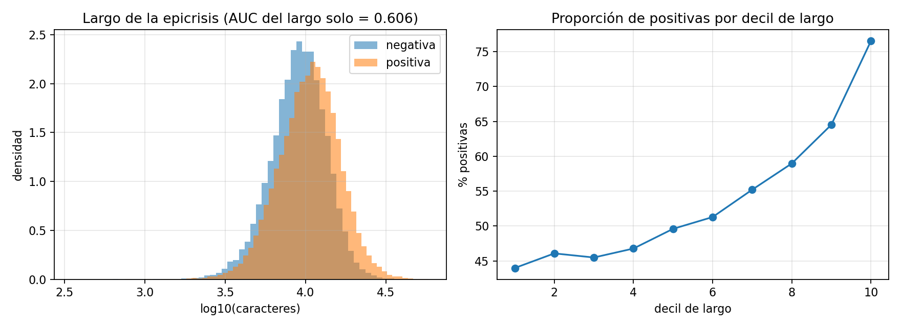
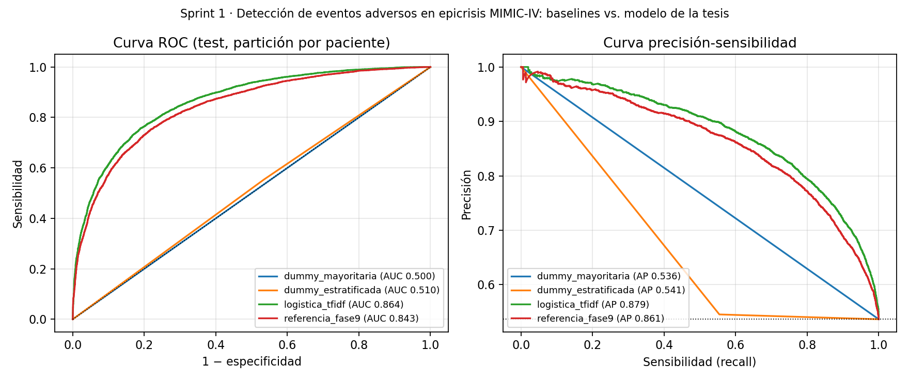
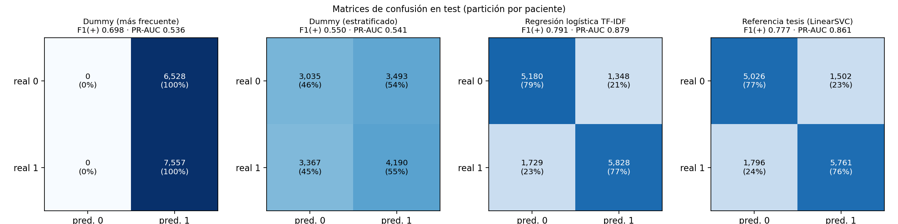

Sprint 1 · Pipeline reproducible, EDA y baseline mínimo
Detección de eventos adversos en epicrisis de MIMIC-IV, como base para la priorización con la Matriz del Modelo GEMSES.
| Alumno | Carlos Pérez Pérez |
|---|---|
| Docente | Dr. Ing. Glen Dario Rodríguez Rafael |
| Curso | MIA-14 Trabajo de Investigación II (en el sílabo: Proyecto de Investigación II, MIA-403) |
| Programa | Maestría en Inteligencia Artificial · FIIS-UNI |
| Fecha | Demo interna del Sprint 1 · semana 3 · viernes 2 de octubre de 2026 |
Qué contiene el repositorio y en qué orden revisarlo
github.com/carlosperez100/mia14-trabajo-investigacion-ii-tesis-gemses-mimic · organizado según el repo de ejemplo del curso
| Carpeta / archivo | Contenido |
|---|---|
README.md | Autores, dataset (fuente, registros, variables, fecha y SHA-256), ejecución y resultados |
data/ | raw · interim · processed vacías en git por el DUA; bitácora de datos con hash |
src/ | ingesta → preprocesado → baseline, más el orquestador run_pipeline.py |
notebooks/ | EDA: calidad, riesgos y decisiones accionables |
logs/ | log por etapa y metrics_baseline.txt |
config/ | semilla 42, split e hiperparámetros |
reportes/ · slides/ | resultados JSON, figuras y esta presentación |
entregables/ | semana 2, roadmap y guion de la demo |
| Issues · Milestones | tareas con responsable y plazo (Sprints 1 y 2) |
Orden sugerido de revisión
- README: proyecto, dataset y hash
- Carpetas: estructura mínima del curso
- Cómo ejecutar:
python src/run_pipeline.py - logs/metrics_baseline.txt: métricas, semilla, split y verificación
- Notebook EDA: 3 decisiones para el Sprint 2
- Resultados e Issues: PR-AUC y tareas
Requisitos: requirements.txt con versiones exactas, .env.example con las rutas y ninguna ruta absoluta en el código.
¿La nota de alta corresponde a una hospitalización con un evento adverso?
Unidad de análisis
Una epicrisis (discharge summary) de MIMIC-IV-Note v2.2.
Variable objetivo
Binaria. Positiva si la hospitalización tiene un código CIE de semántica causal explícita (estrato A1). Es supervisión débil.
Partición
Por paciente (GroupShuffleSplit, 80/20, semilla 42): ningún paciente aparece en train y test a la vez.
Por qué importa la métrica
El test tiene 53.7 % de positivas, así que un dummy que siempre dice «sí» obtiene F1 = 0.698. Por eso la métrica central es la PR-AUC (cuyo piso es 0.537), junto con F1 de la clase positiva y Recall. Como la prevalencia real en MIMIC-IV es 20.12 % (109 775 de 545 497 hospitalizaciones), también se reporta el VPP corregido por Bayes.
Había un modelo entrenado, pero no se podía repetir
Antes del sprint (julio 2026)
- 46 scripts, uno por fase, sin orquestador
- Rutas absolutas escritas en el código
- Partición train/test no guardada
- Versiones de librerías sin fijar
- Sin baseline mínimo sobre el corpus corregido
Cumple la definición de «sprint defectuoso» del sílabo: código que no reproduce, splits no guardados, pipeline no reproducible.
Objetivo medible del Sprint 1
Que un tercero con credencial PhysioNet clone el repositorio, ejecute python src/run_pipeline.py y obtenga:
- el mismo corpus y la misma partición;
- las cifras del modelo de la tesis: sensibilidad 0.7623, especificidad 0.7699 y AUC 0.8426, con una tolerancia de ± 0.005.
Un comando, tres etapas, salidas trazables
data/interim y extrae la época CIE.Configuración
config/config.yaml guarda los parámetros y la semilla; .env guarda las rutas. En src/ no queda ninguna ruta absoluta.
Registro
Cada etapa deja un log con fecha en logs/ y conteos por paso.
Sin fuga
El TF-IDF se ajusta solo con train. La partición se lee de splits.csv.
Bitácora de datos: fuente, fecha, hash, tamaño
| Fuente | Rol | Tamaño | SHA-256 (inicio) |
|---|---|---|---|
| diagnoses_icd.csv.gz (MIMIC-IV v3.1) | cruda, externa (DUA) | 33.6 MB | 47665a41b2a3ad99… |
| discharge.csv.gz (MIMIC-IV-Note v2.2) | cruda, externa (DUA) | 1 139.2 MB | 27bc552edaf81c2a… |
| Etiquetas A1 · Tier A (fase 3 v2) | copiada a interim | 10.8 MB | 778b9d3993c9e1c4… |
| Equivalencias CIE-10-CM (fase 8) | copiada a interim | 3.1 MB | 1f130393a004a274… |
| Positivos CIE-9 (fase 7) | copiada a interim | 4.0 MB | 4d481fbb48da4edb… |
| Época CIE por hospitalización | derivada | 2.6 MB | a8b53ea73a9853ad… |
La segunda ejecución no copia ni vuelve a calcular hashes: hay caché por tamaño y fecha.
MIMIC no se copia ni se versiona. Se registra su hash para demostrar que se usó el mismo archivo.
De 545 497 hospitalizaciones a 70 000 notas, sin pacientes compartidos
Verificación: el corpus reconstruido es idéntico nota por nota, en el mismo orden y con las mismas etiquetas que el de la Fase 9 de julio de 2026.
Cinco preguntas que podrían invalidar el modelo
| Riesgo | Evidencia | Decisión |
|---|---|---|
| Métrica engañosa por el balance | 53.8 % de positivas en el corpus frente a 20.12 % real; el dummy obtiene F1 = 0.698 | PR-AUC como métrica central, más F1 (+) y Recall |
| Confusor de época CIE-9 / CIE-10 | 71.1 / 28.9 % en ambas clases; AUC de la época sola = 0.500 | Controlado |
| Atajo por largo de la nota | Mediana de 10 717 frente a 9 185 caracteres; AUC del largo solo = 0.606 | Moderado control en el Sprint 2 |
| Fuga de códigos CIE en el texto | Formato CIE-10 en 4.95 % de las positivas frente a 4.45 % de las negativas | Bajo; ablación en el Sprint 2 |
| Fuga por paciente | 1.44 notas por paciente; 0 compartidos | GroupKFold en el Sprint 2 |
| Clases raras (etapa 2) | Sistema/Organización: 130 notas (0.34 %) | No evaluable; reportar aparte |
Las notas más largas tienen más positivas

La proporción de positivas sube de 44 % en el decil más corto a 76.5 % en el más largo. Hipótesis a probar: las hospitalizaciones con evento adverso son más largas y complejas, y generan epicrisis más extensas. En el Sprint 2 se mide el AUC dentro de cada decil de largo.
El piso, un modelo simple y el modelo de la tesis
| Modelo | PR-AUC | F1 (+) | Recall | ROC-AUC (IC 95 %) |
|---|---|---|---|---|
| Dummy (más frecuente) | 0.537 | 0.698 | 1.000 | 0.500 |
| Dummy (estratificado) | 0.541 | 0.550 | 0.555 | 0.510 (0.501–0.518) |
| Logística TF-IDF | 0.879 | 0.791 | 0.771 | 0.864 (0.858–0.869) |
| Referencia Fase 9 (LinearSVC) | 0.861 | 0.778 | 0.762 | 0.843 (0.836–0.848) |

Métrica central: PR-AUC; F1 y Recall de la clase positiva. VPP corregido a la prevalencia de 20.12 %: logística 0.485 y referencia 0.455. Tiempos de entrenamiento: logística 226 s; referencia de la Fase 9, 1 980 s.
Matrices de confusión en test

El dummy más frecuente acierta todas las positivas, pero ninguna negativa: por eso su F1 de 0.698 engaña. La logística reduce a la vez los falsos positivos (1 348 frente a 1 502) y los falsos negativos (1 729 frente a 1 796) respecto del modelo de la tesis.
Reproduce la Fase 9 con diferencia 0.0000
Sensibilidad
Especificidad
AUC
Misma matriz de confusión que en julio
VN 5 026 · FP 1 502 · FN 1 796 · VP 5 761
Hallazgo para la tesis
El baseline simple (logística) supera al modelo de la tesis, y sus IC 95 % de AUC no se solapan. La causa todavía no está probada: es una hipótesis para el Sprint 2.
Lo que falta y lo que sigue
Límites de este sprint
- Las tablas de etiquetas (fases 3 v2, 8 y 7) entran como archivos registrados con hash; todavía no se regeneran desde MIMIC dentro del orquestador.
- La etiqueta es débil (códigos de facturación). El panel experto es la validación secundaria.
- Una sola partición train/test; todavía no hay validación cruzada.
Sprint 2 (semanas 4–6)
- Integrar las fases 3 v2, 8 y 7 al orquestador
- GroupKFold por paciente, con resultados por fold
- Control del atajo por largo y ablación con códigos CIE enmascarados
- La logística pasa a ser el baseline a batir
Reproducir
pip install -r requirements.txt cp .env.example .env # MIMIC_DIR, MIMIC_NOTE_DIR, ETIQUETAS_DIR python src/run_pipeline.py # ingesta → preprocesado → baseline (~45 min en CPU)